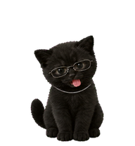
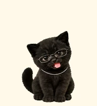
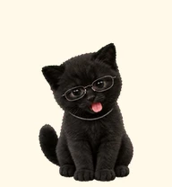

❝
Talk, just you two.
Gemma 3 1B lives on your computer. Ask a question, untangle an idea, or just say hello. No cloud chat. No monthly AI bill.
OFFLINE BRAINYOUR DESKTOP CALLED. IT WANTS A CAT.
A little chaos. A little company. An offline AI friend in silver glasses, living right beside your work.
Bring Akkity home ↗Windows 10 / 11 · No account · No API key

100%01 / A LITTLE INTRODUCTION
Get a tiny taste of Akkity. This playground shows the gestures; the real offline conversation lives in the Windows app.
I'm your little desktop companion. Tap me to tuck this bubble away.
Type here ↑02 / MORE THAN A PRETTY PAW
Gemma 3 1B lives on your computer. Ask a question, untangle an idea, or just say hello. No cloud chat. No monthly AI bill.
OFFLINE BRAINTap the paperclip beside the message box to attach local notes, code, CSV, DOCX or a text PDF. See the filename, remove it with one tap, and ask Akkity about it.
FILES STAY LOCALWalks, waves, jumps, and occasionally looks thoughtful. Idle antics every three seconds. A task countdown stays beside Akkity while you focus.
TINY DESKTOP ROOMMATE03 / YOUR COMPUTER. YOUR CAT.
The model arrives inside the installer. Chat works without the internet after download. Conversations and attached text are saved on your computer.
Curious how it works? See the source ↗THE VERY IMPORTANT CAT DEPARTMENT
New in the desktop app: a Cat care menu, because even a digital little guy deserves a treat. Try a playful preview below.
PAWSITIVELYA tiny cat. Awaiting a very important boop.
Website preview · Your app keeps its own local treat and play counters.
THE SMALL BUT MIGHTY MOVES COLLECTION
Actual animation previews from the Windows app. Press play to meet the moves. Each action uses interpolated motion between its original poses.
The little rightward commute.
A change of plans. Naturally.

Double tap for a tiny celebration.

A hello, just for you.
LITTLE BRAIN. USEFUL CONVERSATIONS.
Small everyday help, right beside your work. Here are a few things to try in Akkity's offline chat.
Attach your notes and ask for a plain-language explanation.
Turn a messy thought or document into a few next steps.
Read the useful bits of a text PDF, DOCX, code file or CSV.
Example prompts, not guaranteed answers. Akkity's small local model can make mistakes; review its replies.
HOW TO BRING A CAT HOME
The EXE contains the app, its animation artwork, and its local AI model.
No account or technical setup. The per-user installer creates your shortcuts.
Tap to chat, drag to a comfy spot, or open Settings to make Akkity yours.
A SMALL HOME FOR YOUR CONVERSATIONS
Chat requests go to the bundled AI server on your own machine. Your files aren't uploaded to a cloud chat service. Old conversations, preferences and virtual treat counters stay in local storage.
Attached text is saved with your local conversations. The app is a chat companion; it does not browse or operate your computer.
04 / GOOD CAT. YOUR RULES.
ONE DOWNLOAD. ONE LITTLE FRIEND.
Windows x64 · Full offline installer · Includes the 806 MB model
Open the installer, accept the bundled model terms, and install. Akkity handles the rest.
No Python setup. No terminal. No separate AI downloads.
Unsigned community build; Windows may display a publisher warning. Only download from the linked official release.
Yes. The Windows installer includes the local Gemma model and CPU inference runtime. The desktop app sends chat requests only to a server on your own computer. You need internet to download the installer, not to chat.
Close pet hides Akkity in the Windows notification area. Press Ctrl+Alt+A or use the tray icon to reopen it. If you choose Quit completely, reopen Akkity from the Start menu or desktop shortcut.
A 64-bit Windows 10 or 11 computer. Allow at least 2 GB of disk space; 8 GB of RAM is recommended for comfortable use. Replies run on your CPU, so speed depends on your computer. No dedicated GPU is required.
Short conversations, summaries, explanations and checklists. Gemma 3 1B is a small model and can make mistakes. It cannot control your computer, browse the web, or read images. Attached files are limited to 2 MB, with text excerpts up to 5,000 characters and the first 15 PDF pages.
Chats and settings stay in your Windows LocalAppData/Akkity folder. Attached text becomes part of the saved conversation. You can reopen chats in settings and export them from the chat menu. The website doesn't receive your app conversations.
Yes! The GitHub repository includes the app, website, build instructions, and architecture diagrams. The app code is MIT licensed; the bundled Gemma model has its own terms and use restrictions.